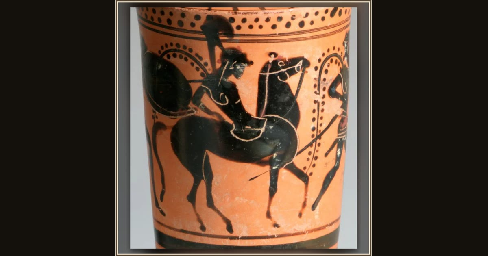

Lekythos
Diosphos Painter · 1st half of 5th century BCE · met
This lekythos shows a rider on horseback; Herodotus says the Amazons seized horses in Scythia, mounted them, and raided the surrounding country (4.110.2) Explore its place in Herodotus's Histories, Book IV, chapter 297.